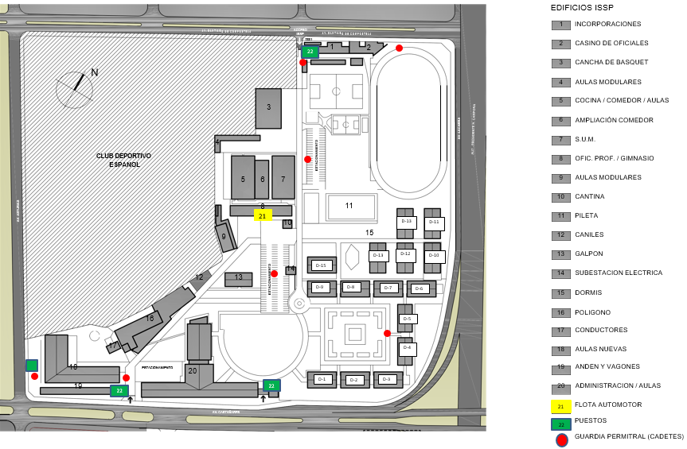

Mapa
CONMUTADOR 4323-89100
PUESTO GP - interno 125710
PUESTO 1 - Santiago de Compostela 3801 - interno 125788
PUESTO 3 - Av Principe de Asturias 2325 - interno 125764
PUESTO 4 - Av Castañares 3779 - interno 125766
PUESTO 4(BIS) - Anexo Indoamericano
Croquis Instalaciones
